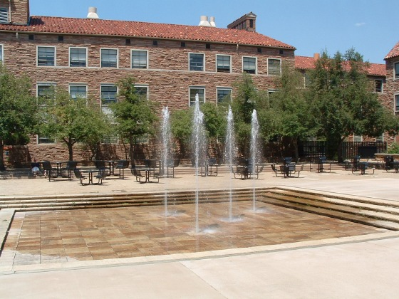

Welcome to the Keller Center
The Keller Center for the Study of First Amendment is part of the Political Science Department of the University of Colorado, Boulder. The Center was endowed in 1993 by LeRoy "Lee" Keller, Vice President and General Manager of UPI's International Service and a CU graduate.Keller Center Mission Statement:
The Keller Center supports and encourages teaching, research and community outreach on topics and issues relating to the nature, meaning, and contemporary standing of First Amendment rights and liberties. Through undergraduate classes, public events, and scholarly conferences, the Center seeks to educate students, faculty and the community about the protections of free speech, press, association and religion under the First Amendment. The Keller Center also seeks to inform the public about the historical, legal and philosophical foundations of First Amendment rights and about contemporary threats to those liberties.The Dalton Trumbo Fountain
Named for blacklisted author and CU alumnus who stood up to
Joe McCarthy's House Un-American Activities Committee (HUAC) in 1947.